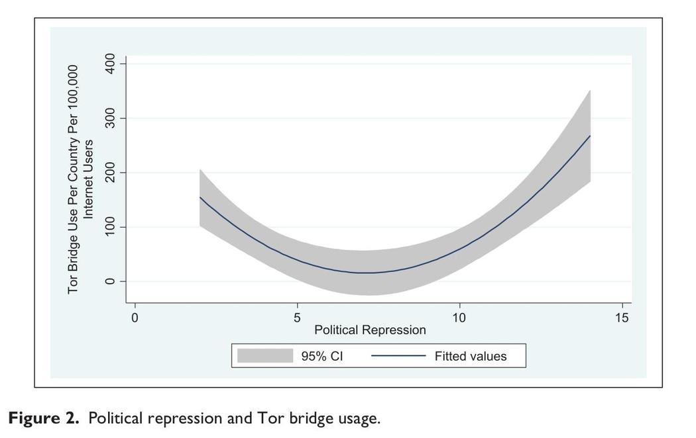
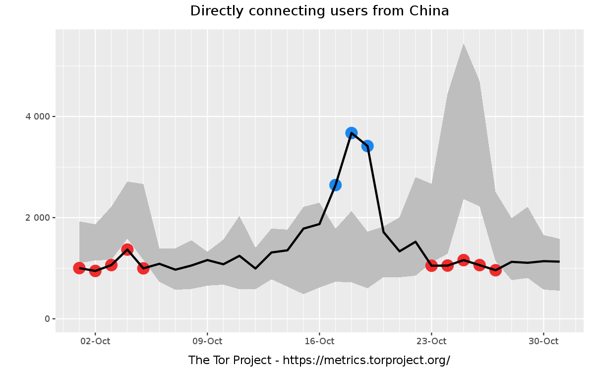
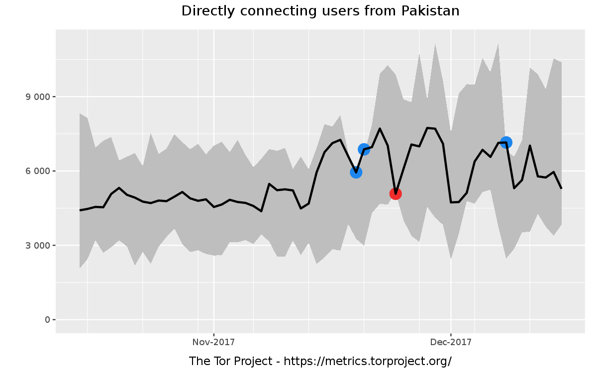
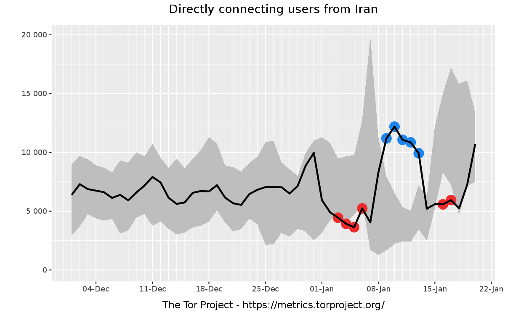

The average person (or business entity) publicly shares their personal information on the internet. If you search with Google, send email with Gmail, talk with Facebook Messenger, and browse the Web with Chrome, you are being tracked. These free services, and many more, store and analyse your personal messages, search history, cloud photos, and the websites you visit. This information is readily available to governments, hackers, or really any business or person who is interested and willing to pay (law firms, journalists, advertisers, etc).
This is not news to most people. You have perhaps experienced an advertisement pop up suddenly related to a website you visited that you thought was private. You have probably had Facebook recommend new friends who you just met a week ago. However, these are all rather benign examples that don't warrant paranoia over your digital security.
As part of my 2018 new years resolution I have been taking a closer look at my online privacy. Many people have questioned me on it and so I thought I would address it in a blog post. To begin with, I'd like to refer you to a great TED Talk on Why Privacy Matters. Take 20 minutes to watch it and come back.
For those too lazy to click, Glenn Greenwald makes the point that we don't behave the same way in the physical world and the virtual world. In the physical world, we lock our houses, cover our PIN at the ATM, close the curtains, don't talk about business secrets in public, and use an empty room when having a private conversation. This is largely because we understand that in the physical world, we can open unlocked doors, glance at PIN keypads, peek through curtains, listen to company gossip, and overhear conversations.
In the virtual world, we are unfortunately uneducated about how to snoop on other's private information. We assume that sending an email on Gmail is private, or opening an incognito mode browser hides everything. This is far from the truth: mass surveillance is relatively cheap and easy, and there are many organisations that are well invested in knowing how to snoop. However, for the most of us, we only experience this through tailored advertising. As a result, there is little motivation to care about privacy.
In this post, I will not talk about how you are tracked, or how to secure yourself. These are deep topics that deserve more discussion by themselves. However, I do want to talk about why privacy matters.
The right to privacy is a basic human right. Outside the obvious desire to hide company secrets, financial and medical information, we behave differently when we are being watched. You can watch adult videos if you close the door, buy different things if you don't have a judgmental cashier, and talk about different things on the phone if you aren't sitting on a train in public.
Again, these are benign and socially accepted norms. However, there are people living in countries where the norm is largely biased against their favour. Global issues like corruption and political oppression exist, even though many of us are lucky to turn a blind eye. Victims of these countries are censored, incarcerated, and killed. See for yourself where your country ranks in the list of freedom indices.
In these societies, a greater percentage of the population start to be impacted by the poor digital security that we practice. We can see this in the following graph, which shows the usage of The Tor Project, a tool that anonymises Internet traffic, correlating with political oppression (read the original study).

Further investigation shows that Tor usage (see how Tor statistics are derived) similarly correlates to politically sensitive events. As of writing this post, I rewinded the clock to the three most recent political events that occurred in countries which experience censorship and political oppression.
First, we have the 19th National Congress of the Communist Party of China. You can see the tripling in activity as this event occurred. The red dots show potential censorship.

Similarly, we can see a turbulent doubling in value during the blocks of social media and TV channels in Pakistan.

Finally, a spike of usage and statistically relevant censorship / release of censorship events during the anti-government protests in Iran.

These three events were simply picked as the most three recent political events. Whether they are good or bad is largely irrelevant and I hold no opinion on them whatsoever. However, it is clear that others do have an opinion, and are using services like Tor as a reaction. Of course, it's not just Tor. For example, a couple weeks ago, 30,000 Turks were incorrectly accused of treason from a 1x1 tracking pixel. This results in jobs, houses, and innocent lives being lost. In the US, Governors are still signing in support of Net Neutrality.
Despite these issues, there are those that believe that as long as we do not do anything bad, there is nothing to hide. Privacy tools are used by criminals, not the common population. This is also untrue. The definition of "bad" changes depending on who is in power, and criminals are motivated individuals who have much better privacy tools than most will ever have. Statistically, increasing the basic awareness of privacy does not increase criminal activity, but does increase protection of the unfairly oppressed.
Those who are fortunate enough to live a complacent digital life tend to decrease the average awareness of digital privacy. Just as we donate relief aid to countries that experience wars or natural disasters, we should promote awareness about digital freedom on the behalf of those who do not have it. Nurturing a more privacy aware generation -a generation who is born with a tablet in their hands- is a responsibility to ensure that social justice and the expression of the marginalised population remains possible.
Next up, I'll talk a bit about what tracking does occur, and what privacy tools are out there.